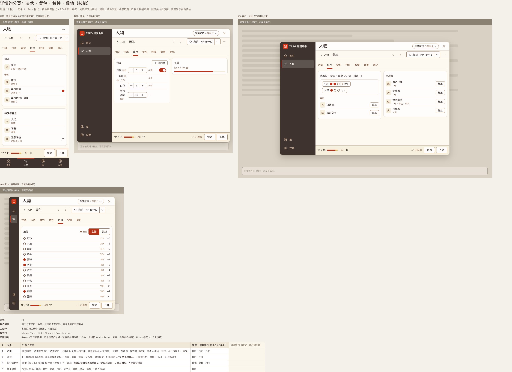
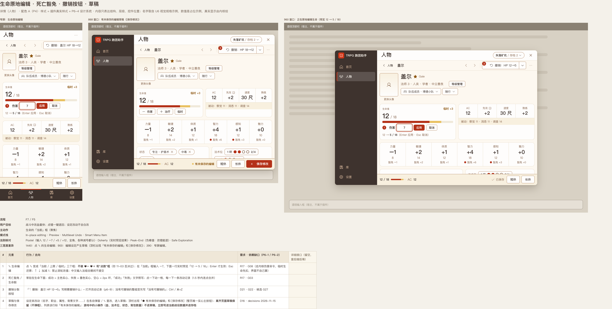
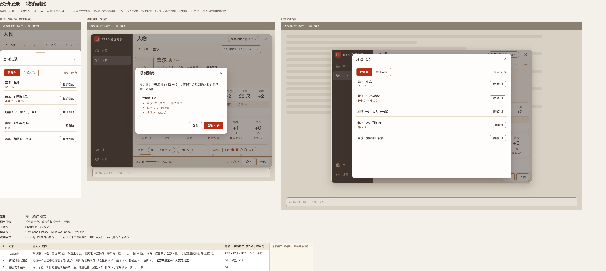

P6 人物线框（2026-11-15）
共 14 屏。外壳按窗口宽分档（≥720 宽 / 481–720 中 / ≤480 窄）；人物区按“面板宽”再分档：面板 ≥720 列表 + 详情并排，否则整页下钻。依据：P6-3（v2 + 已定决定优先）、P6-4 设计系统。「详细接口」一栏先留空。
列表（人物）


新建（模板 · 分步建卡）
详情（人物）
 人物详情主视图：第一屏全是战斗要素，下方分页，宽屏并排多栏
人物详情主视图：第一屏全是战斗要素，下方分页，宽屏并排多栏
详情的分页：法术 · 背包 · 特性 · 数值（技能）
生命原地编辑 · 死亡豁免 · 撤销按钮 · 草稿
改动记录 · 撤销到此